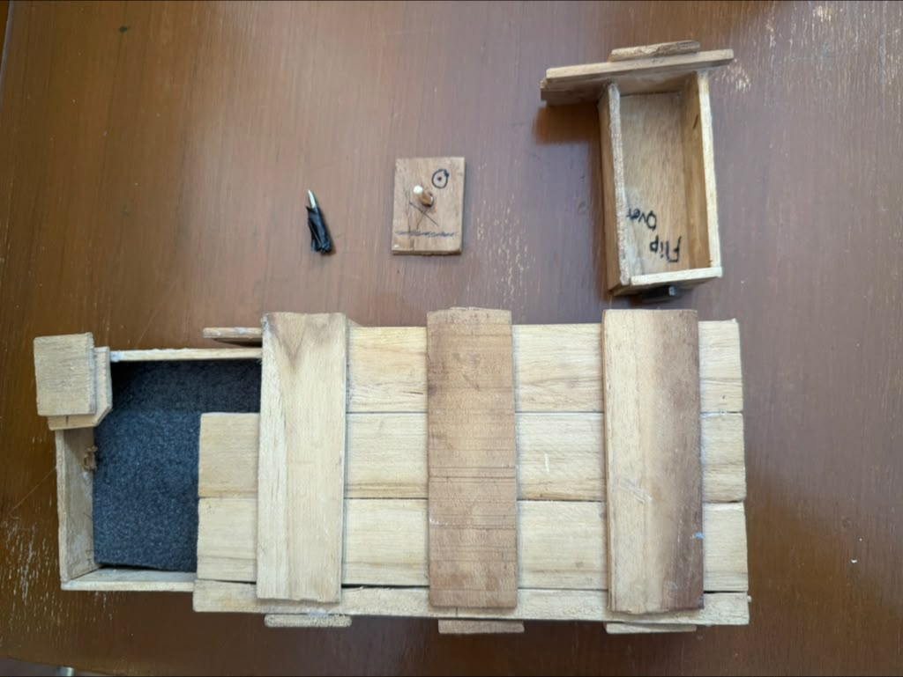

How it started
I followed a tutorial from The King of Random YouTube channel to make a small wooden mystery box. I remember being really excited by the idea that the box looked simple from the outside, but had a specific sequence of steps to open it.
I used a saw to cut the wooden pieces and wood glue to assemble them. A lot of the process was trial and error because the pieces had to line up well for the box to slide and open properly.


Building the box
Making the box taught me that a build can make sense in your head but still be hard to make in real life. The cuts, measurements, and assembly all had to be close enough for the mechanism to work.
I also learned that small details matter a lot. If one piece was slightly off, the box would not slide smoothly. That made the project frustrating at times, but also really satisfying when it finally worked.
How it opens
The video below shows me going through the opening sequence of the mystery box.
Reflection
Looking back, this project feels like an early version of the kind of work I still enjoy now: taking an idea, turning it into something physical, testing whether it actually works, and learning from the parts that do not.
It also reminds me that my interest in making things started with small projects like this, long before I had access to more formal tools or labs.